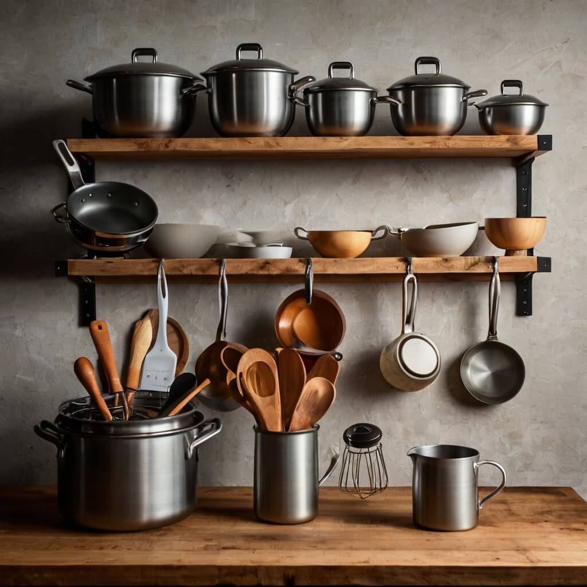

Utensílios Feitos Para Inspirar Suas Receitas

Na BrewBrilliance, acreditamos que cada refeição é uma oportunidade de criar algo especial.
Nossa paixão é transformar o ato de cozinhar em uma experiência prazerosa e eficiente. Com utensílios práticos, resistentes e inovadores, ajudamos você a explorar novos sabores e aperfeiçoar suas habilidades culinárias. Cada detalhe é pensado para tornar sua cozinha mais funcional e inspiradora.
Nossos produtos incluem:
panelas de alto desempenho, facas afiadas e precisas,
utensílios ergonômicos, acessórios para baristas, louças
sofisticadas, organizadores inteligentes e muito mais! Nossa
seleção de utensílios e acessórios é projetada para atender às
necessidades de qualquer tipo de cozinheiro, desde os
iniciantes até os profissionais. Nossa equipe de especialistas
seleciona apenas os melhores produtos para oferecer a você a
melhor experiência de cozinha.
- Panelas de alto desempenho
- Facas afiadas e precisas
- Utensílios ergonômicos
- Acessórios para baristas
- Louças sofisticadas
- Organizadores inteligentes
- Conjunto de facas (3 peças)
- Tábua de corte
- Fouet de cozinha
- Colheres de medição (5 peças)
- Abre-garrafas
- Conjunto de facas (5 peças)
- Tábua de corte (de bambu)
- Fouet e espátula de cozinha
- Colheres e copos de medição
- Descascador de legumes
- Conjunto profissional de facas (7 peças)
- Tábua de corte (de madeira)
- Espátulas de silicone (3 peças)
- Kit para assados
- Conjunto de potes para armazenamento
Transformando Sua Cozinha em um Espaço de Criatividade
Na BrewBrilliance, cada utensílio é desenvolvido para tornar suas receitas mais fáceis e prazerosas. Queremos inspirar você a cozinhar com mais confiança, oferecendo ferramentas que elevam sua experiência culinária.
Nosso Compromisso
Qualidade e Inovação em Cada Detalhe
Projetamos utensílios duráveis e práticos para facilitar sua rotina e ampliar suas possibilidades na cozinha.
Nossa missão é garantir que você tenha ferramentas confiáveis e bem projetadas, permitindo que experimente novas receitas e desenvolva seu talento culinário.
Precisão e Funcionalidade
Cada utensílio é pensado para proporcionar praticidade e desempenho, ajudando você a cozinhar como um verdadeiro chef.
Nossos produtos combinam design ergonômico com materiais de alta qualidade, garantindo conforto e eficiência em cada uso.
Soluções Inteligentes para sua Cozinha
Com inovação e praticidade, ajudamos você a transformar cada refeição em um momento especial. Desenvolvemos utensílios que permitem que você explore novas receitas e experimente diferentes sabores e aromas. Acreditamos que a cozinha deve ser um espaço de criatividade e alegria, e nossos produtos são desenvolvidos para tornar tudo mais simples e eficiente.
Ferramentas que Facilitam seu Dia a Dia
Acreditamos que a cozinha deve ser um espaço de criatividade e alegria, e nossos produtos são desenvolvidos para tornar tudo mais simples e eficiente. Com a BrewBrilliance, você pode se concentrar em criar receitas incríveis e inovadoras, sem se preocupar com a qualidade e a durabilidade dos utensílios. Nossa missão é ajudar você a transformar a cozinha em um local de inspiração e criatividade.
Detalhes que Fazem a Diferença
Cada item da BrewBrilliance é projetado para ser intuitivo e versátil, permitindo que você explore novos sabores com facilidade. Nossos produtos são desenvolvidos para serem fáceis de usar e limpar, economizando tempo e esforço para que você possa se concentrar em cozinhar.
Cozinhar Nunca Foi Tão Inspirador
Criamos utensílios que ajudam você a inovar e tornar cada prato uma experiência inesquecível. Nossos produtos são desenvolvidos com materiais de alta qualidade, garantindo durabilidade e eficiência em cada uso. Descubra novas possibilidades culinárias e surpreenda seus convidados com criações únicas e sofisticadas.
Descubra como a BrewBrilliance pode elevar sua cozinha a um novo patamar de criatividade e eficiência.
A Arte de Cozinhar Bem
Transformamos sua cozinha em um espaço de inspiração, onde cada utensílio potencializa sua criatividade. Acreditamos que cozinhar vai além do preparo das refeições – é uma arte, um momento de expressão e prazer.
Muito além do comum
Criamos utensílios que tornam cada preparo especial. Combinamos funcionalidade, design e inovação para que você desfrute da experiência de cozinhar com praticidade e sofisticação.
Excelência garantida
A BrewBrilliance é referência quando o assunto é qualidade na cozinha. Cada item que oferecemos é projetado para elevar sua experiência culinária, garantindo durabilidade, conforto e um toque de elegância.
Apoio em cada detalhe
Desde a escolha do utensílio ideal até o uso no dia a dia, estamos com você. Nosso compromisso é fornecer produtos que simplifiquem sua rotina e tragam mais alegria ao seu momento de cozinhar.
Paixão e precisão
Cada peça da BrewBrilliance é feita com dedicação e atenção aos mínimos detalhes. Seja um chef profissional ou um amante da culinária, nossos utensílios tornam sua experiência mais fluida, prática e inspiradora.
Inovação na cozinha
A evolução culinária começa com ferramentas inteligentes. Investimos em tecnologia e design para oferecer utensílios ergonômicos, eficientes e modernos. Cozinhar nunca foi tão prazeroso e descomplicado!